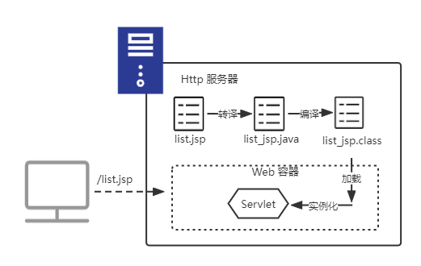

JSP 基础
直接在 Servlet 中使用 printWriter 输出 Html 页面是在是太痛苦了，因此有了 JSP。JSP 中可以直接编写 HTML，使用了指示、声明、脚本（Scriptlet）等许多元素来堆砌各种功能，但是 JSP 本质还是会被编译成 Servlet，你所编写的页面内容最后都会在 Servlet 的 service 方法中被 printWriter 输出到浏览器。
JSP 的生命周期
JSP 本质上就是一个 Servlet，因此 Servlet 有的生命周期 JSP 也会有，不过 JSP 存在一个由 JSP 文件到 Servlet 实例的过程，如果 JSP 页面第一次被请求：

既然是 Servlet ，那么 JSP 在被加载后，同样会经历 init、service 和 destroy 三个周期，不过如果 Web 容器是 Tomcat ，JSP 在被转译成的 Servlet 是继承自 HttpJspBase 类，该类已经重写了 init、service 和 destroy 方法，同时定义了三个空方法。
public final void init(ServletConfig config){
super.init(config);
jspInit();// 这是一个空实现
_jspInit();
}
public final void destory(){
jspDestroy();// 这是一个空实现
_jspDestroy();
}
public final void service(HttpServletRequest request,HttpServletResponse response){
_jspService(request,response);
}
_jspInit、_jspDestroy 和 _jspService 三个带下划线的方法，表示是由容器自己维护，不应该重写定义这些方法。
如果想在实例化后和销毁前扩展，可以重写 jspInit 和 jspDestroy 方法。
编写 JSP
编写 JSP 就是在编写 Servlet 的 service 方法，除了用 <%!%> 包裹的内容外，其他页面内容都会被编译成 service 方法的内容，如果是 tomcat 的话，则具体点就是在写 _jspService(request,response) 方法。
指示元素
指示元素是用来说明 JSP 转译成 Servlet 源码的时候，所需要遵循的一些规范。在 JSP 中有三种常用的指示类型：page、include 和 taglib。
page
page 有一些可以设置的属性，但是这里只介绍三个最常用的：
- import：引入依赖包，等同于 java 文件的 import。
- contentType：内容 MIME。
- pageEncoding：编码。
它们可以一起使用，也可以分开写：
<%@page import="java.time.LocalDateTime" contentType="text/html" pageEncoding="UTF-8" %>
<%@page import="java.util.*"%>
include
静态包含另外一个页面内容。
<%@include file="/WEB-INF/jspf/footer.jsp"%>
taglib
引入其他标签库。
<%@taglib prefix="c" uri="http://java.sun.com/jsp/jstl/core" %>
标签库的具体使用请参考
声明、Scriptlet和表达式
声明类变量或者方法
格式：<%!类成员变量声明或者方法声明%>
示例：
<%!
String username="ruby"; String password="123456";
public boolean checkUser(String username,String password){
....
}
%>
<!-- 重写 jspInit -->
<%!
@Override
public void jspInit(){...}
%>
由于声明的类变量，不是 service 方法内的变量，因此需要注意线程安全问题，因为它们会被多个请求共享。
Scriptlet
在 jsp 中 插入 java 代码片段，这些片段都会被编译到 service 方法中，因此它的作用范围就是单次请求。
格式：<%java 代码%>
示例：
<%
String username=request.getParameter("username");
String password=request.getparameter("password");
%>
在编写 JSP 页面的时候一般是不建议存在 Scriptlet，因为同时存在前端页面代码和 java 代码会让整个 JSP 文件变得混乱，不易维护，也不利于分工，JSP 尽量只保持有前端页面代码，这样可以让专业的前端人员进行维护。如果想禁用 Scriptlet，可以在 Web.xml 中维护：
<jsp-config>
<jsp-property-group>*.jsp</jsp-property-group>
<scripting-invalid>true</scripting-invalid>
</jsp-config>
表达式
表达式很容易理解：
<%= LocalDateTime.now() %>
最终会被编译成：
out.println(LocalDateTime.now());
注释
<%
//注释，这种方式，注释会保留在编译后的 Servlet 源代码中
/*多汗注释*/
%>
<!--网页注释，这种方式可以在浏览器端看见注释 -->
<%-- jsp 注释 这种方式既不会留着编译后 Servlet 源码中，也不会出现在浏览器中--%>
至于为什么是上面的效果，想必理解了 JSP 即是 Servlet，尤其是 JSP 与 service 方法的联系后，应该很容易理解。
隐式对象
| 隐式对象 | 说明 |
|---|---|
| out | 对应 JspWriter，其内部封装了一个 PrintWriter 对象 |
| request | 对应 HttpServletRequest 对象 |
| response | 对应 HttpServletResponse 对象 |
| config | 对应 ServletConfig 对象 |
| application | 对应 ServletContext 对象 |
| session | 对应 HttpSesssion 对象 |
| pageContext | 对应 PageContext 对象，提供了 JSP 页面资源的封装，并可设置页面范围属性 |
| exception | 对应 Trowable 对象，代码 JSP 页面抛出的异常，只出现在错误页面（isErrorPage 设置为 true 的页面） |
| page | 对应 this |
pageContext
pageContext 可以设置四种范围属性，pageContext、request、session、application：
getAttribute(String name,int scope);
setAttribute(String name, Object value, int scope);
removeAttribute(String name, int scope);
其中 scope 常数有：
- PageContext.PAGE_SCOPE：pageContext
- pageContext.REQUEST_SCOPE：request
- pageContext.SESSION_SCOPE：session
- pageContext.APPLICATION_SCOPE：application
// 该方法可以不制定 scope，会依次从 pageContext、request、session 和 application 中查找属性，找到立马返回。
pageContext.findAttribute(String name);
错误处理
标准标签
表达式语言（EL）
JSP 中可以使用 EL 表达式获取属性、请求参数、请求头与 Cookie 等信息，或者进行一些简单的运算或者判断，这样可以减少 Scriptlet 的使用，例如：
<%
String a=request.getParameter("a");
String b=request.getParameter("b");
out.println("<body>")
out.println(String.format("%s+%s=%d",a,b,Integer.parseInt(a)+Integer.parseInt(b)));
out.println("</body>");
%>
<!-- 使用 EL 表达式 -->
<body>
${param.a}+${param.b}=${param.a+param.b}
</body>
使用 EL 表达式取得属性
存取属性范围
在 EL 中，可以使用 EL 隐式对象指定范围来存储属性，如果不指定范围，则默认以 page、request、session、application 的顺序来寻找指定的属性。
获取属性方式
- 使用 ”.“ 运算符，左边可以是 JavaBean 或者 Map 对象。
- 使用 ”[]“运算符，左边可以是 JavaBean、Map、数组或者 List 对象。
获取 JavaBean
如下存入一个属性：
requst.setAttribute("user",user);
可以通过以下方式获取 user 的 name 字段：
${user.name}
${user["name"]}
获取 Map
如下存入一个属性：
<%
Map<String,String> map=new HashMap<>();
map.put("username","cocoadel");
map.put("role","admin");
request.setAttribute("login",map);
%>
可以通过以下方式获取 map 中的值：
${login.username}
${lonin["role"]}
如果是 map 的话，更加建议是用 ”[]“ 运算符，因为如果 key 存在空格符的话，也可以正确取得值。
获取数组或者 List 元素
如下存入一个属性
<%
List<String> names=new ArrayList<>();
names.add("cocoadel");
names.add("ruby");
request.setAttribute("names",names);
request.setAttribute("index",1);
%>
可以通过以下方式获取 List 元素：
${names[0]}// cocoadel
${names[1]}// ruby
${names[param.index]}// ruby
"[x]" x如果不含有 ”“，则表示这是一个表达式，会把表达式转换成值，再使用值作为索引，如果含有”“，则表示这是一个 key。
EL 隐式对象
EL运算符
${a="10"}
//等同
<% pageContext.setAttribute("a","10");%>
${a="10";b="20";0}//该代码三个语句会分别执行，最后表达式的值是 0
${scores=[100,95,88,75]}//创建 List
${names={"ruby","wiess","yang","blcak"}} // 创建 Set
${passwords={"Admin":"123456","Manager":"3234423"}} // 创建 Map
${String("cocoadel")} //调用构造方法创建对象
${Integer.parseInt("123")}
${Math.max(a,b)}
${pageContext.getElContext().getImportHandler().importClass("java.time.LocalTime")}
${LocalTime.now()}
${plus=(x,y)-> x+y}
${names.stream().filter(name->name.length()>=3).toList()}